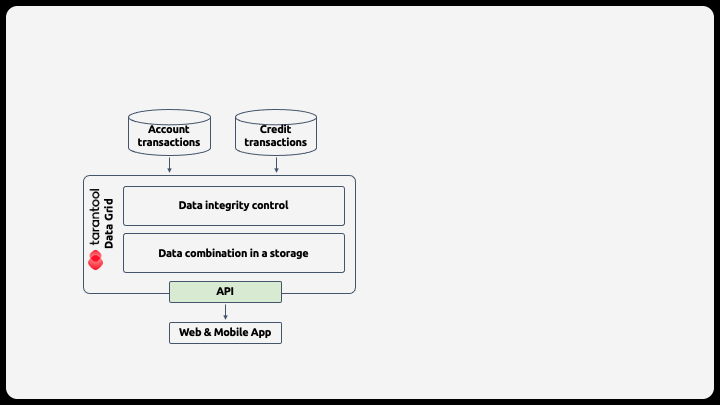
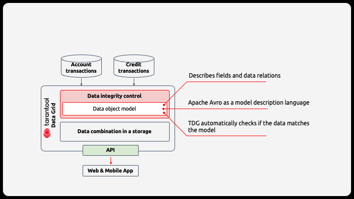
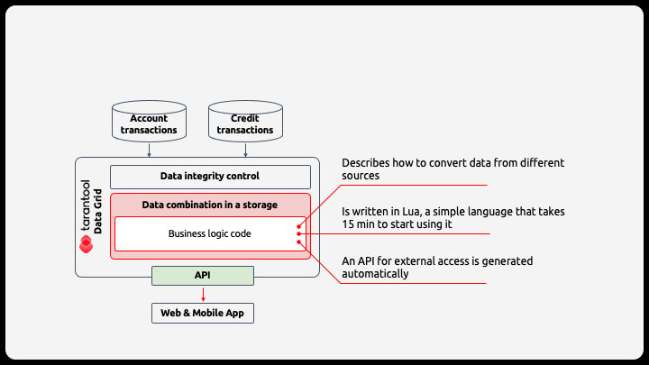
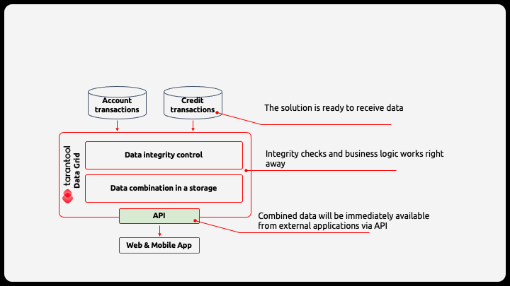

Introduction to Tarantool Data Grid 2.0¶
Tarantool Data Grid (TDG) is a product that makes it easier to create and maintain business solutions on the Tarantool platform. It is a separate product that complements Tarantool Enterprise. TDG allows you to launch solutions quickly and with minimal developer involvement.
Here’s an example of a solution: a data mart that integrates data on customer accounts and credits and displays it in mobile and web application.
There are only three steps to create a business solution using Tarantool Data Grid:
Step 1: Describe the data object model.
Step 2: Set the data combination logic.
Step 3: Run the solution on a single server.
Once you’ve integrated TDG, a non-programmer, such as an analyst or an architect, can maintain and develop the solution. It is possible, because you get the maximum functionality out of the box to implement typical scenarios, such as data integrity checks or error handling, and needs that arise while creating solutions.
Here are the guides that explain how to work with the Tarantool Data Grid system: